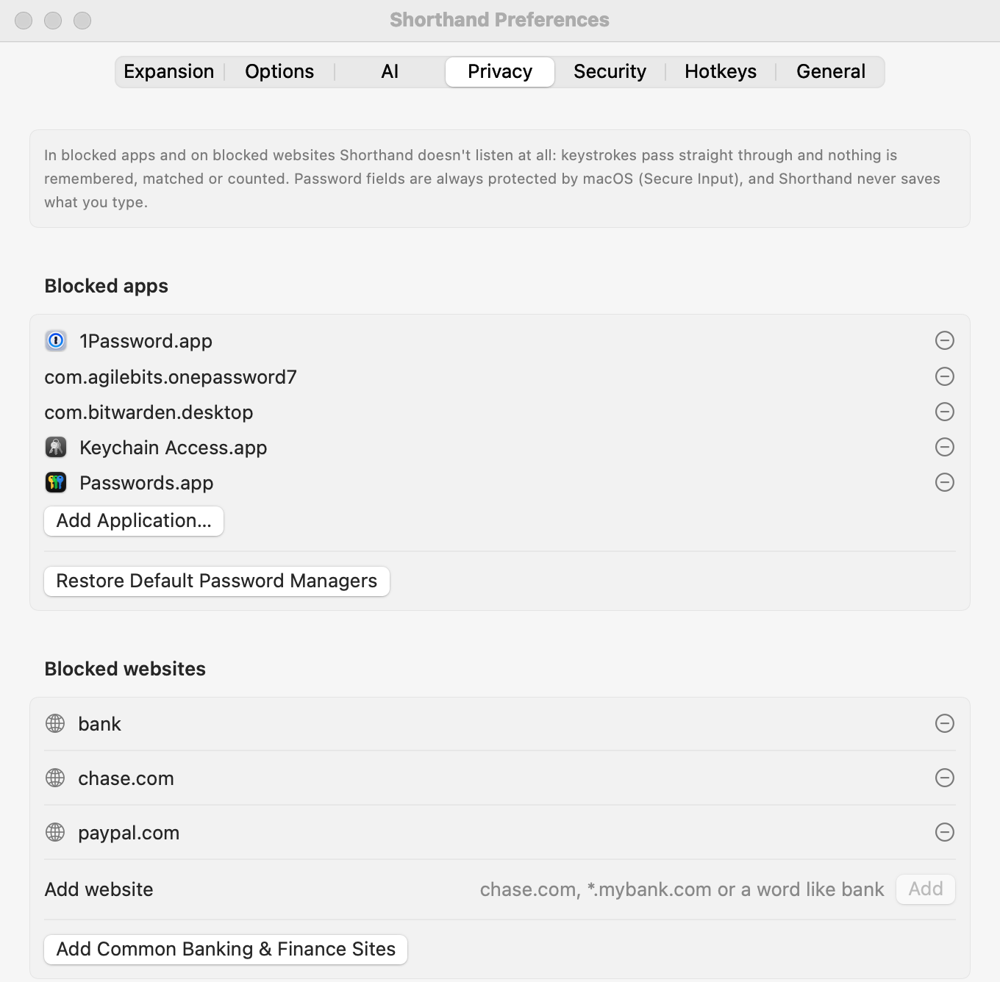

Privacy, Blocklist & Permissions
A text expander has to see what you type. Here is exactly what Shorthand does with that, where you can switch it off completely, and what it asks macOS for.
Your typing
- Shorthand keeps only the last few hundred characters you typed, in memory, to check whether they end with an abbreviation. Clicking, arrow keys, shortcuts and switching apps clear it.
- Your typing is never saved to disk, never logged and never sent anywhere.
- Shorthand has no account, no analytics and no tracking. It contacts the internet only for the AI features you use.
- While a password field (or another app’s Secure Input) is active, macOS hides keystrokes from Shorthand completely. See Secure Input.
- In apps and on websites you block, Shorthand doesn’t look at your typing at all. See Blocklist.
Blocklist: apps and websites where Shorthand stays out

Set these up in Settings ▸ Privacy.
What “paused” means
In a blocked app, or on a blocked website, Shorthand is paused. Your keystrokes pass straight through, untouched. Nothing is kept in memory, nothing is matched against abbreviations, nothing is counted in statistics and nothing is used for suggestions. Snippets don’t expand there.
Blocked apps
Password managers are blocked from the start: 1Password (versions 7 and 8), Bitwarden, Keychain Access and Passwords (macOS 15 and later).
- To block another app, click Add Application… under Blocked apps and choose it.
- To unblock one, click the − next to it.
- If you removed the password managers, Restore Default Password Managers adds them back.
Blocked websites
Under Blocked websites, type an address and click Add (or press Return).
| You type | What’s blocked |
|---|---|
chase.com | chase.com and every address ending in .chase.com, such as secure.chase.com. |
*.mybank.com or https://www.mybank.com/login | Tidied up to mybank.com, which then works as above. Shorthand drops https://, www., a leading *., anything after the first /, and port numbers. |
bank (a word with no dot) | Any site whose address contains it: bankofamerica.com, mybank.co.uk, and so on. |
Add Common Banking & Finance Sites adds a ready-made list in one click: the word bank (so every address containing “bank”) plus chase.com, wellsfargo.com, bankofamerica.com, citi.com, capitalone.com, usbank.com, americanexpress.com, discover.com, paypal.com, venmo.com, schwab.com, fidelity.com, vanguard.com, irs.gov and ssa.gov. Remove any you don’t want with −.
Shorthand checks every part of the page, not just its address. Many sites embed a sign-in box from another site (a bank login inside a shopping or bill-payment page, for example). Shorthand pauses if either the page or the embedded box is on your blocklist.
Shorthand reads page addresses in these browsers: Safari (and Safari Technology Preview), Google Chrome (and its Beta and Canary versions), Arc, Microsoft Edge, Brave, Firefox, Opera, Vivaldi and Chromium.
Chrome, Arc, Edge, Brave, Opera, Vivaldi and Chromium only prepare the accessibility information Shorthand reads when an app asks for it, so Shorthand asks for it. Website blocking has been confirmed working in Arc. The other browsers haven’t been confirmed yet: after you block a site, open it and check that the menu shows ⏸ Paused here: before relying on it.
Blocking and allowing from the menu bar
Click the Shorthand icon in the menu bar while you’re in the app or on the page:
- Block Shorthand in App blocks the app in front.
- Block Shorthand on site blocks the website you’re on. It appears only in a supported browser, once Shorthand has read the page’s address.
- When Shorthand is paused, the menu shows ⏸ Paused here: and the app or site, for example ⏸ Paused here: 1Password. If a broader rule caused it, the rule is shown too, such as mybank.co.uk (rule “bank”).
- Allow Shorthand Here removes the block that applies here.
Allow Shorthand Here removes the rule that blocks this site. If that rule also covers other sites, for example the word bank or a parent domain, Shorthand names the rule and asks before removing it. Choose Cancel to keep it.
The first time you use an app
The first time an app comes to the front, Shorthand asks Use Shorthand in App? with Allow and Block buttons.
- While the question is on screen, Shorthand doesn’t listen in that app. The menu bar menu shows ⏸ Paused here: waiting for your answer.
- Allow lets Shorthand work there as usual. It won’t ask about that app again. Choosing Allow Shorthand Here from the menu bar menu does the same.
- If you don’t answer within about 12 seconds, that counts as Allow.
- Block adds the app to Blocked apps. You can undo that in Settings ▸ Privacy.
If a notice with its own button is showing (such as Moved to Trash with Undo), the question waits for it to go away rather than covering it.
When you update from an earlier version, the apps that are open the first time the new version runs count as already answered, so you aren’t asked about every app you already use.
It only asks while expansion is on, and only about regular apps (the kind that appear in the Dock). To stop the question, turn off Ask before working in an app for the first time in Settings ▸ Privacy. To be asked again about every app, click Ask Again for All Apps.
Limits worth knowing
- Website blocking depends on the browser. Shorthand reads the page address through Accessibility, so it works only if the browser makes the address available that way (see the list of browsers above).
- When Shorthand checks the page. It re-checks within about 0.15 seconds after you click, press Return, use a ⌘ or ⌃ shortcut (including switching tabs with ⌃Tab or ⌘1–⌘9) or switch apps, and checks again in the background every 1.5 seconds. A keystroke typed in the split second before a check finishes may still be seen, though it is only ever held in memory.
- Checks don’t slow your typing. Page lookups happen in the background, so a slow browser can’t hold up your keystrokes.
- Other browsers aren’t covered. In a browser not on the list above, blocked websites have no effect. Block the whole browser app instead if you need to.
- Password fields are protected anyway. macOS hides typing in password fields from every app, Shorthand included, through Secure Input. The blocklist adds protection for everything else on the page.
Accessibility permission
Shorthand needs Accessibility permission to see keystrokes, find your text cursor (to place the fill-in window and search panel), read selected text (for AI Actions and Create Snippet from Selection), and type and paste snippets.
- Open System Settings ▸ Privacy & Security ▸ Accessibility, or click Grant… in Shorthand’s setup window or in Settings ▸ General ▸ Permissions.
- Turn on Shorthand.
The status is shown in Settings ▸ General ▸ Permissions (green tick or red ✕). If expansion stops after an update, see re-granting after a rebuild.
Shorthand may also ask, through macOS, to control other apps when an AppleScript snippet does so, and to use its Keychain items for AI keys.
The clipboard
Shorthand inserts snippets by pasting. It saves what was on your clipboard first and puts it back right after (unless you turn off Restore clipboard after expansion). The clipboard is read when a snippet uses %clipboard or {clipboard}, and when you create a snippet from the clipboard.
What’s stored on your Mac
| What | Where |
|---|---|
| Snippet library | ~/Library/Application Support/Shorthand/Library.json, or your sync folder |
| Settings | ~/Library/Application Support/Shorthand/Preferences.json |
| Statistics (counts only) | ~/Library/Application Support/Shorthand/Statistics.json |
| Backups | ~/Library/Application Support/Shorthand/Backups |
| Security settings (lock settings and locked copies of your encryption key, no passwords or other secrets) | ~/Library/Application Support/Shorthand/Security.json |
| Diagnostics (permission status only, never typed text) | ~/Library/Application Support/Shorthand/diagnostics.log |
| AI keys, and the encryption key if encryption is on | Your login Keychain, never in the files above |
Normally the library is a plain text file, like most documents. If you turn on encryption in Settings ▸ Security, the library (including the copy in a sync folder), settings, statistics and every backup are encrypted, so a copy of them can’t be read without your key. Security.json and the diagnostics log stay plain; neither contains your snippets or any secret. See Security & Encryption, including what encryption can’t do.
Even with encryption, it’s best not to keep passwords in snippets. A password manager is the right place for them.
Suggestions and reminders
Both are off by default. When on, repeated phrases are tracked only as one-way fingerprints in memory and forgotten when Shorthand quits; a phrase is saved only once it becomes a suggestion. See Suggestions & Reminders.
AI
AI is off until you add a key. When you use an AI feature, only the text it needs goes straight to the provider you chose (or your fallback provider). Details: AI privacy.
Update checks
When checking for updates, Shorthand downloads a small file (the update feed) from GitHub. It sends no information about you, your Mac or your snippets. Turn automatic checks off in Settings ▸ General ▸ Updates.
Scripts
Script snippets run with your permissions. Imported libraries can contain scripts; check them before use, or turn off Run script snippets (AppleScript, shell, JavaScript). See Script Snippets.